전자계산기기사 (2015-09-19 기출문제)
1과목: 시스템 프로그래밍
1. 다중 프로그래밍 시스템에서 어떤 프로세스가 아무리 기다려도 결코 발생하지 않을 사건을 기다리고 있을 때, 그 프로세스는 어떤 상태라고 볼 수 있는가?
- Deadlock
- Working Set
- Semaphore
- Critical Section
(정답률: 83%)

2. 라운드 로빈 스케줄링 기법에 대한 설명으로 옳지 않은 것은?
- 시간할당량이 클수록 FCFS와 같아진다.
- 시분할 시스템을 위해 고안된 방식이다.
- 실행시간이 가장 짧은 프로세스에게 먼저 CPU를 할당한다.
- 시간할당량이 작을수록 문맥교환이 빈번하게 발생한다.
(정답률: 71%)
3. 프로세스가 일정 시간 동안 자주 참조하는 페이지의 집합을 의미하는 것은?
- Working Set
- Prepaging
- Thrashing
- Locality
(정답률: 82%)
4. 라이브러리에 기억된 내용을 프로시저로 정의하여 서브루틴으로 사용하는 것과 같이 사용할 수 있도록 그 내용을 현재의 프로그램 내에 포함시켜 주는 어셈블리어 명령은?
- INCLUDE
- CREF
- ORG
- EVEN
(정답률: 84%)
5. 원시 프로그램을 컴파일러가 수행되고 있는 컴퓨터의 기계어로 번역하는 것이 아니라, 다른 기종에 맞는 기계어로 번역하는 것은?
- 크로스 컴파일러
- 디버거
- 인터프리터
- 프리프로세서
(정답률: 77%)
6. 로더(Loader)의 기능이 아닌 것은?
- Allocation
- Link
- Compile
- Relocation
(정답률: 77%)
7. 매크로 프로세서의 기능으로 옳지 않은 것은?
- 매크로 호출 저장
- 매크로 정의 인식
- 매크로 정의 저장
- 매크로 호출 인식
(정답률: 72%)
8. 기계어에 대한 설명으로 옳지 않은 것은?
- 컴퓨터가 이용할 수 있는 0과 1만으로 명령을 표현한다.
- 컴퓨터의 내부구성과 종류에 따라 의존성을 가진다.
- 전문적인 지식이 없어도 수정, 보완, 변경이 가능하다.
- 처리속도가 빠르다.
(정답률: 80%)
9. 프로세스의 정의로 옳지 않은 것은?
- 목적 또는 결과에 따라 발생되는 사건들의 과정
- 지정된 결과를 얻기 위한 일련의 계통적 동작
- 동기적 행위를 일으키는 주체
- 프로세서가 할당되는 실체
(정답률: 81%)
10. 프로그램 실행을 위하여 메모리 내에 기억 공간을 확보하는 작업은?
- linking
- loading
- compile
- allocation
(정답률: 81%)
11. 운영체제의 성능 평가 요소로 거리가 먼 것은?
- 처리 능력
- 반환 시간
- 사용 가능도
- 비용
(정답률: 84%)
12. 시스템 프로그래밍 언어로 가장 적합한 것은?
- PASCAL
- COBOL
- C
- FORTRAN
(정답률: 86%)
13. 일반적인 로더(General Loader)에 가장 가까운 것은?
- Compile And Go Loader
- Dynamic Loading Loader
- Direct Linking Loader
- Absolute Loader
(정답률: 79%)
14. 기호 번지로 사용한 각종 데이터나 명령어가 기억된 번지 값을 특정 레지스터로 가져오도록 하는 어셈블리어 명령은?
- XLAT
- LEA
- XCHG
- RET
(정답률: 63%)
15. 교착상태 발생의 필요 충분 조건이 아닌 것은?
- 상호 배제
- 선점
- 환형 대기
- 점유 및 대기
(정답률: 76%)
16. 어셈블리어로 작성된 원시 프로그램의 수행 순서로 옳은 것은?
- 원시 프로그램 → 어셈블러 → 로더 → 연결편집기
- 원시 프로그램 → 연결편집기 → 어셈블러 → 로더
- 원시 프로그램 → 어셈블러 → 연결편집기 → 로더
- 원시 프로그램 → 로더 → 어셈블러 → 연결편집기
(정답률: 70%)
17. 어셈블리어에서 어떤 기호적 이름에 상수 값을 할당하는 명령은?
- EQU
- ASSUME
- LIST
- EJECT
(정답률: 83%)
18. 어셈블리어에서 프로그램 작성시 한 프로그램 내에서 동일한 코드가 반복될 경우 반복되는 코드를 한번만 작성하여 특정 이름으로 정의한 후 그 코드가 필요할 때마다 정의된 이름을 호출하여 사용하는 것을 무엇이라고 하는가?
- Spooling
- Preprocessor
- Emulator
- Macro
(정답률: 83%)
19. 세그먼테이션과 페이징 기법에 관한 설명으로 옳지 않은 것은?
- 페이징 시스템의 페이지는 물리적 단위로 크기가 가변적이다.
- 세그먼트는 논리적 단위로 분할된 가변적 크기를 가진다.
- 페이징의 경우 기억장소의 내부적 단편화가 일어날 수 있다.
- 세그먼테이션의 경우 논리주소는 세그먼트 번호와 세그먼트 내의 오프셋 조합으로 이루어진다.
(정답률: 64%)
20. 서브루틴에서 자신을 호출한 곳으로 복귀시키는 어셈블리어 명령은?
- SUB
- MOV
- RET
- INT
(정답률: 83%)
2과목: 전자계산기구조
21. 병렬처리 시의 문제점과 가장 거리가 먼 것은?
- 분할의 문제
- 스케줄링의 문제
- 동기화의 문제
- 블록지정의 문제
(정답률: 53%)
22. 기억소자와 I/O 장치 간의 정보교환 때 CPU의 개입없이 직접 정보 교환이 이루어 질 수 있는 방식은?
- Strobe 방식
- 인터럽트 방식
- Handshaking 방식
- DMA 방식
(정답률: 63%)
23. 연산 방식에 대한 설명 중 옳지 않은 것은?
- 직렬 연산 방식은 병렬 연산 방식보다 시간이 많이 소요된다.
- 병렬 연산 방식은 직렬 연산 방식에 비해 속도가 느리다.
- 직렬 연산 방식은 hardware가 간단하다.
- 병렬 연산 방식은 hardware가 복잡하다.
(정답률: 73%)
24. 그림과 같은 회로의 게이트(gate)는? (단, 정논리에 의함)
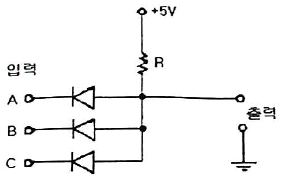
- AND gate
- OR gate
- NAND gate
- NOR gate
(정답률: 56%)
25. 명령 레지스터에 호출된 OP code를 해독하여 그 명령을 수행시키는 데 필요한 각종 제어 신호를 만들어내는 장치는?
- Instruction Decoder
- Instruction Encoder
- Instruction Counter
- Instruction Multiplexer
(정답률: 66%)
26. 다음과 같은 값을 가지는 시스템에서 2계층 캐시 메모리를 사용할 경우는 그렇지 않은 경우에 비해 평균 메모리 액세스 시간이 약 몇 배 향상되는가?
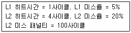
- 1.1
- 1.4
- 2.7
- 5.5
(정답률: 55%)
27. 사이클 스틸과 인터럽트에 관한 설명으로 옳은 것은?
- 사이클 스틸은 주기억장치의 사이클 타임을 중앙처리장치로부터 DMA가 일시적으로 빼앗는 것으로 중앙처리장치는 주기억장치에 접근할 수 없다.
- 사이클 스틸은 중앙처리장치의 상태보존이 필요하다.
- 인터럽트는 중앙처리장치의 상태보존이 필요하다.
- 인터럽트는 정전의 경우와는 관계없다.
(정답률: 61%)
28. 2의 보수 표현이 1의 보수 표현보다 더 널리 사용되고 있는 주요 이유는?
- 음수 표현이 가능하다.
- 10진수 변환이 더 용이하다.
- 보수 변환이 더 편리하다.
- 덧셈 연산이 더 간단하다.
(정답률: 44%)
29. 인터럽트의 발생 원인으로 적당하지 않은 것은?
- Supervisor Call
- 정전
- 분기 명령의 실행
- 데이터 에러
(정답률: 52%)
30. 다음 중 컴퓨터의 처리 능력을 높일 수 있는 병렬처리 기법에 해당되지 않는 것은?
- memory interleaving
- instruction pipeline
- micro programming
- multiple function unit
(정답률: 53%)
31. 입출력을 위해 DMA 전송의 초기 준비에 프로세서의 1000클록이 소요되고 DMA 완료시 인터럽트 처리에 프로세서의 500클록 사이클이 쓰여지는 시스템이 있다. 하드디스크는 초당 4MB를 전송하며 DMA를 사용할 때 디스크로부터의 평균 전송량이 8KB이면 디스크가 전송에 100% 쓰여 질 경우 500MHz 프로세서의 클록 사이클 중 얼마만큼이 사용되는가?
- 2×10-3
- 20×10-3
- 700×103
- 750×103
(정답률: 64%)
32. 병렬컴퓨터에서 처리요소의 성능을 측정하는데 사용되는 단위는?
- MIPS
- BPS
- IPS
- LPM
(정답률: 58%)
33. 제어장치의 구성요소 중에서 산술 연산을 할 때 필요한 자료나 연산 결과를 저장하는 레지스터는 무엇이며, 이 레지스터가 산술논리 연산장치와 연결에 대해 바르게 설명한 것은?
- 데이터 레지스터이며, 산술논리 연산장치와는 양방향 전송을 한다.
- 데이터 레지스터이며, 산술논리 연산장치와 데이터를 단방향 전송을 한다.
- 누산기이며, 산술논리 연산장치와 데이터를 양방향 전송을 한다.
- 누산기이며, 산술논리 연산장치와 데이터를 단방향 전송을 한다.
(정답률: 56%)
34. -25를 2의 보수 형태의 2진수로 나타냈을 때 이를 왼쪽으로 1비트만큼 이동했을 때의 값은? (단, 각 수는 8bit로 표시)
- 110011112
- 110011102
- 101100112
- 111100112
(정답률: 60%)
35. 주소지정방식 중에서 기본 주소가 프로그램 카운터에 저장되는 방식은?
- 직접주소지정방식
- 간접주소지정방식
- 인덱스주소지정방식
- 상대주소지정방식
(정답률: 45%)
36. 컴퓨터와 터미널 간에 그림과 같은 정보선을 통하여 동시전송을 한다고 할 때의 전송 방식은?
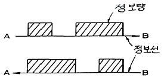
- half duplex
- simplex
- full duplex
- double duplex
(정답률: 61%)
37. 다음 중 부프로그램과 매크로(Macro)의 공통점은?
- 삽입하여 사용한다.
- 분기로 반복을 한다.
- 다른 언어에서도 사용한다.
- 여러 번 중복되는 부분을 별도로 작성하여 사용한다.
(정답률: 65%)
38. 주기억장치의 용량이 512KB인 컴퓨터에서 32bit의 가상주소를 사용하는데, 페이지의 크기가 1kword이고 1word가 4byte라면 실제 페이지 번호와 가상 페이지 번호는 몇 비트씩 구성되는가?
- 실제페이지번호 = 7, 가상페이지번호 = 12
- 실제페이지번호 = 7, 가상페이지번호 = 20
- 실제페이지번호 = 19, 가상페이지번호 = 12
- 실제페이지번호 = 19, 가상페이지번호 = 32
(정답률: 48%)
39. PE(Processing element)라는 연산기를 사용하여 동기적으로 병렬처리를 수행하는 병렬처리기는?
- Pipeline processor
- Vector processor
- Multi processor
- VLSI processor
(정답률: 53%)
40. 다중처리기에 대한 설명으로 옳지 않은 것은?
- 수행속도의 성능 개선이 목적이다.
- 하나의 복합적인 운영체제에 의하여 전체 시스템이 제어된다.
- 각 프로세서의 기억장치만 있으며 공유 기억장치는 없다.
- 프로세서들 중 하나가 고장나도 다른 프로세서들에 의해 고장난 프로세서의 작업을 대신 수행하는 장애극복이 가능하다.
(정답률: 60%)
3과목: 마이크로전자계산기
41. 8085 CPU에서 클록은 약 2.5MHz이다. LDA 명령을 수행하는데 13개 T 스테이트가 필요하다. 이 때 명령 사이클은 약 몇 μs 인가?
- 13
- 5.2
- 3.2
- 2.5
(정답률: 54%)
42. Stack이 사용되는 경우가 아닌 것은?
- 서브루틴을 실행할 때
- CALL 명령이 수행될 때
- Branch 명령이 실행될 때
- 인터럽트가 받아들여졌을 때
(정답률: 49%)
43. 마이크로컴퓨터의 레벨구조에서 하드웨어와 가장 밀접한 최하위 레벨 구조는 무엇인가?
- 소프트웨어 레벨
- 기본소자 레벨
- 매크로 레벨
- 마이크로 레벨
(정답률: 56%)
44. 직렬 데이터 전송방식에 해당하지 않는 것은?
- P-ATA
- RS232C
- USB
- IEEE1394
(정답률: 46%)
45. 컴퓨터에서 일어나는 동작을 제어하기 위한 타이밍 신호에 대한 설명으로 틀린 것은?
- 동기식은 일정 시간 간격을 가진 클럭 펄스에 의해서 각 장치의 동작이 규칙적으로 수행된다.
- 동기식은 하나의 동작이 완료되면 완료 신호를 발생시키고 각 장치들은 신호를 받아 다음 동작을 수행한다.
- 동기식은 비동기식에 비하여 회로를 비교적 쉽게 설계할 수 있다.
- 타이밍 신호를 통해 시퀀스가 한번 반복되는데 걸리는 시간을 컴퓨터 사이클이라고 한다.
(정답률: 35%)
46. 분기(Branch) 인스트럭션은 어떤 종류에 속하는가?
- Data transfer
- Data manipulation
- Program manipulation
- Input and Output
(정답률: 42%)
47. CPU와 여러 개의 I/O 장치와 연결되어 있을 때 I/O를 하나씩 순차적으로 점검하여 인터럽트를 요구한 I/O를 찾아내는 인터럽트 방식을 무엇이라 하는가?
- 벡터링(vectoring)
- 폴링(polling)
- 매핑(mapping)
- 멀티플렉싱(multiplexing)
(정답률: 49%)
48. 한 번에 하나의 워드만을 전송하는 DMA 방식은?
- Burst 방식
- Cycle Stealing 방식
- Daisy Chain 방식
- Strobe Control 방식
(정답률: 45%)
49. 어셈블러의 기능에 해당되지 않는 것은?
- format conversion
- storage allocation
- data generation
- memory loading
(정답률: 49%)
50. 메모리 어드레스(Memory Address)를 지정하는데 사용되는 레지스터로 지정된 메모리 어드레스로부터 유효 주소를 계산하는데 사용되는 주소 정보를 기억시키는 레지스터는?
- MAR(Memory Address Register)
- IR(Instruction Register)
- SR(Status Register)
- IR(Index Register)
(정답률: 40%)
51. 동작 속도가 가장 빠른 기억소자는?
- ECL
- schottky TTL
- TTL
- I2L
(정답률: 59%)
52. cache memory에 대한 설명 중 틀린 것은?
- 캐시의 용량보다 큰 프로그램을 수행할 때는 적중률(hit ratio)이 감소한다.
- 캐시와 주기억 장치 사이에 정보 교환을 위하여 주기억 장치에 접근하는 단위는 페이지이다.
- 캐시를 가진 컴퓨터를 이용하는 프로그램을 작성할 때 프로그래머는 캐시의 존재를 인식할 필요가 없다.
- 중앙 처리 장치와 주기억 장치의 속도 차가 현저할 때 명령 수행 속도를 중앙 처리 장치와 같도록 하기 위해 사용한다.
(정답률: 35%)
53. interrupt system의 구성 요소가 아닌 것은?
- interrupt request circuit
- interrupt handling routine
- interrupt service routine
- interrupt fetching routine
(정답률: 30%)
54. 다음 중 전원이 끊어지면 기억된 내용이 소실되는 기억 소자는 무엇인가?
- PROM
- RAM
- EPROM
- Flash Memory
(정답률: 56%)
55. 메모리 용량이 2048 바이트가 되기 위해서는 몇 개의 128×8 RAM 칩이 필요한가?
- 2개
- 4개
- 8개
- 16개
(정답률: 35%)
56. 주소지정 방식 중 레지스터의 초기화와 상수를 지정하는데 많이 사용하는 방식은 무엇인가?
- 직접 주소 방식
- 간접 주소 방식
- 즉치 주소 방식
- 인덱스 주소 방식
(정답률: 31%)
57. 그림은 어느 회로의 벤다이어그램인가? (단, A, B는 입력 사선부분은 출력)
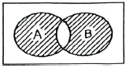
- NOR
- NAND
- XNOR
- XOR
(정답률: 45%)
58. 다음 그림에 대한 설명 중 틀린 것은?
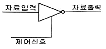
- 제어 신호가 낮은 상태(Low)일 때 자료출력은 1이다.
- 인버팅 버퍼이다.
- 신호 증폭에 사용될 수 있다.
- 이와 같은 종류의 버퍼를 3상태(Tri-State) 장치라고 한다.
(정답률: 54%)
59. 한 플랫폼에서 작동하도록 되어 있는 프로그램을 다른 플랫폼에서 작동하도록 수정하는 것을 무엇이라 하는가?
- 시뮬레이팅(Simulating)
- 오퍼레이팅(Operating)
- 포팅(Porting)
- 디버깅(Debugging)
(정답률: 56%)
60. 일반적인 프로그램 설계 시 커다란 프로그램을 작은 단위로 분할하여 전체 프로그램을 독립적으로 구성 가능한 기능적 단위로 분할하여 설계하는 방법은?
- flow charting
- structured programming
- modular programming
- Top - down
(정답률: 46%)
4과목: 논리회로
61. 다음 중 AB+AB‘C식을 간단히 한 것은?
- AC
- AB
- AB+AC
- A‘B+AC
(정답률: 47%)
62. 다음 회로의 기능은?
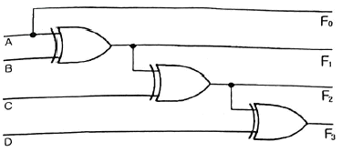
- BCD → 그레이 코드 변환회로
- 그레이 코드 → BCD 변환회로
- BCD → 2*421 변환회로
- 2*421 → BCD 변환회로
(정답률: 50%)
63. 다음 그림의 4비트 가산기가 하는 것은?
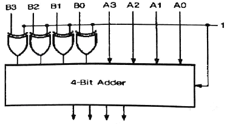
- 뺄셈
- 덧셈
- 디코딩
- 대소비교
(정답률: 45%)
64. 10진수 0.4375를 2진수로 변환한 것으로 옳은 것은?
- 0.1110(2)
- 0.1101(2)
- 0.1011(2)
- 0.0111(2)
(정답률: 50%)
65. 4단 존슨-카운터(Johnson-counter)의 모듈러스는 몇 개인가?
- 4
- 8
- 12
- 16
(정답률: 52%)
66. 다음 Karnaugh도를 간략화하면?
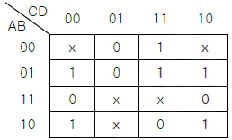
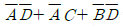
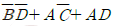
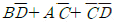
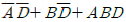
(정답률: 45%)
67. 다음과 같은 회로에서 출력 Y를 올바르게 구한 것은?
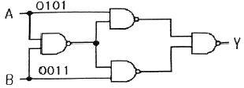
- 0001
- 1001
- 0110
- 0111
(정답률: 47%)
68. 다음 회로의 논리함수를 바르게 나타낸 것은?
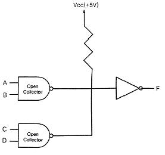
- F=AB+CD
- F=(A+B)(C+D)
- F=A+B+C+D
- F=AB⊕CD
(정답률: 36%)
69. 다음 불 대수 중에서 등식이 잘못된 것은?
- x+xy=x
- xy+y=y
- (x+y)(x+y)=x
- xy+xz+yz=xy+xz
(정답률: 57%)
70. 그림은 전가산기이다. 출력 S와 Co의 논리식은?
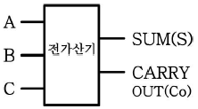
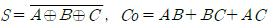
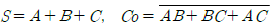
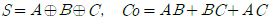
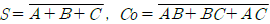
(정답률: 58%)
71. 다음 중 순서논리(sequential logic) 동작을 하는 것은?
- 멀티플렉서(multiplexer)
- 카운터(counter)
- 인코더(encoder)
- 디코더(decoder)
(정답률: 53%)
72. 다음 [그림]은 어떤 플립플롭의 타이밍 다이어그램인가?
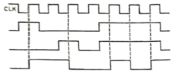
- RS 플립플롭
- D 플립플롭
- T 플립플롭
- JK 플립플롭
(정답률: 43%)
73. 다음 제어논리 설계방법 중 하나의 상태마다 하나의 플립플롭을 쓰는 방법(a flip-flop state)의 장점이 아닌 것은?
- 설계의 노력이 절감된다.
- 작동하는 단순성이 증가한다.
- 완전한 순차회로를 만드는데 필요한 조합회로가 감소한다.
- 변경해야 할 사항이 발생했을 때 재배선이 필요없다.
(정답률: 50%)
74. 프로그램 카운터(Program Counter)에 대한 설명으로 가장 적합한 것은?
- 연산할 때 항상 사용되는 프로세서 내의 레지스터
- 다음에 수행될 명령어의 번지를 넣어두는 프로세서 내의 레지스터
- 번지를 계산할 때 사용되는 레지스터
- 수행된 프로그램 수를 계수하는 레지스터
(정답률: 49%)
75. 두개의 3bit 수를 곱하는 2진 승산기를 수행하는데 필요한 ROM의 크기는 다음 중 어느 것인가?
- 23×6
- 24×8
- 25×8
- 26×6
(정답률: 41%)
76. [그림]과 같은 블록도는 무슨 회로를 나타낸 것인가?
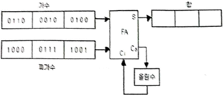
- 병렬가산기
- 병렬감산기
- 직렬감산기
- 직렬가산기
(정답률: 42%)
77. 다음 회로는 무슨 회로인가?
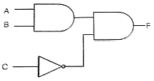
- 3상태 버퍼
- 금지회로
- 반감산기
- 우선순위 인코더
(정답률: 53%)
78. 다음 중 입력이 모두 0일 때만 출력이 0이 되는 게이트는?
- OR
- XNOR
- NOR
- NAND
(정답률: 54%)
79. 컴퓨터 설계 시에 취급할 데이터를 26개의 영문자, 10개의 숫자 및 특수문자 4개(+, -, /,*)로 구성한다면 이들 데이터를 처리하기 위한 alphanumeric 코드의 크기는 최소 몇 bit 인가?
- 5
- 6
- 26
- 36
(정답률: 52%)
80. 다음 중 BCD 코드 01100001을 10진수로 변환한 것으로 옳은 것은?
- 41
- 51
- 61
- 71
(정답률: 68%)
5과목: 데이터통신
81. 협의의 VAN이 제공하는 기본 기능에 속하지 않는 것은?
- 부하 분산 기능
- 전송 기능
- 교환 기능
- 통신 처리 기능
(정답률: 55%)
82. 다음 중 A, B, C, D 문자 전송 시 홀수 패리티 비트 검사에서 에러가 발생하는 문자는?
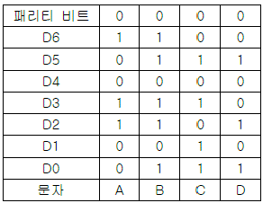
- A
- B
- C
- D
(정답률: 69%)
83. 다음이 설명하고 있는 라우팅 프로토콜은?
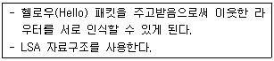
- SMTP
- OSPF
- RIP
- ICMP
(정답률: 40%)
84. 아날로그 데이터를 디지털 신호로 변환 시표본화 과정을 거쳐 생성되는 신호로 맞는 것은?
- 펄스폭변조(PWM)
- 펄스진폭변조(PAM)
- 펄스위치변조(PPM)
- 펄스부호변조(PCM)
(정답률: 38%)
85. 패킷 교환 기술의 데이터그램 전송방식과 가상회선 전송방식의 차이점으로 옳은 것은?
- 전송데이터를 패킷단위로 구분
- 목적지 노드에서 패킷들의 순서를 재구성
- 패킷 교환기 사용
- 데이터 단말장비(DTE) 사용
(정답률: 56%)
86. 보오(baud) 속도가 1400이고, 한 번에 3개의 비트를 전송할 때 데이터 신호속도(bps)는 얼마인가?
- 1200
- 2800
- 4200
- 5600
(정답률: 67%)
87. 다음 설명에 해당하는 OSI 7계층은?
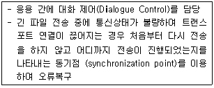
- 데이터링크 계층
- 네트워크 계층
- 세션 계층
- 표현 계층
(정답률: 55%)
88. 다음이 설명하고 있는 것은?
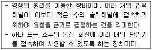
- 다중화기
- 라우터
- 이더넷
- 집중화기
(정답률: 47%)
89. 자동 재전송 요청기법(Automatic Repeat reQuest) 중 에러가 검출된 해당 블록만을 재전송하는 방식으로 재전송 블록 수가 적은 반면, 수신측에서 큰 버퍼와 복잡한 논리 회로를 요구하는 기법은?
- Stop and Wait ARQ
- Selective Repeat ARQ
- Go-Back-N ARQ
- Adaptive ARQ
(정답률: 62%)
90. HDLC에서 피기백킹(piggybacking) 기법을 통해 데이터에 대한 확인응답을 보낼 때 사용되는 프레임은?
- I-프레임
- S-프레임
- U-프레임
- A-프레임
(정답률: 60%)
91. X.25 프로토콜에 대한 설명으로 틀린 것은?
- 물리 계층의 표준으로 X.21을 사용한다.
- 링크 계층의 표준은 LAPB을 사용한다.
- 패킷형 단말기를 패킷 교환망에 접속하기 위한 인터페이스 프로토콜이다.
- 물리 계층과 링크 계층인 2개의 계층으로 구성된다.
(정답률: 50%)
92. 라우팅 프로토콜인 OSPF(Open Shortest Path First)에 대한 설명으로 틀린 것은?
- OSPF 라우터는 자신의 경로 테이블에 대한 정보를 LSA 라는 자료구조를 통하여 주기적으로 혹은 라우터의 상태가 변화되었을 때 전송한다.
- 라우터 간에 변경된 최소한의 부분만을 교환하므로 망의 효율을 저하시키지 않는다.
- 도메인 내의 라우팅 프로토콜로서 RIP가 가지고 있는 여러 단점을 해결하고 있다.
- 경로수(Hop)가 16으로 제한되어 있어 대규모 네트워킹에 부적합하다.
(정답률: 63%)
93. LAN의 매체 접근 제어 중 토큰 패싱 방식에 대한 설명으로 가장 옳은 것은?
- 노드 사이의 접근충돌을 막기 위해서 네트워크 접근을 교대로 허용한다.
- 데이터 전송 시 반드시 토큰을 확보해야 하고, 전송을 마친 후에는 토큰을 반납한다.
- 노드 수가 많거나 데이터양이 많은 경우에는 충돌이 일어나기 때문에 데이터의 손실이 매우 크다.
- 우선순위가 없기 때문에 모든 노드들이 균등한 전송기회를 갖는다.
(정답률: 52%)
94. TCP/IP 응용계층 프로토콜 중 트랜스포트 계층의 UDP상에서 동작하는 것은?
- ICMP(Internet Control Message Protocol)
- SNMP(Simple Network Management Protocol)
- SMTP(Simple Mail Transfer Protocol)
- HTTP(Hyper Text Transfer Protocol)
(정답률: 49%)
95. 데이터 통신에서 사용되는 오류검출 기법이 아닌 것은?
- Parity Check
- Block Sum Check
- Cyclic Redundancy Check
- Huffman Check
(정답률: 57%)
96. TCP/IP 네트워크를 구성하기 위해 1개의 C클래스 주소를 할당 받았다. C 클래스 주소를 이용하여 네트워크상의 호스트들에게 실제로 할당할 수 있는 최대 IP 주소의 개수는?
- 253개
- 254개
- 255개
- 256개
(정답률: 66%)
97. 다음 중 부정적 응답에 해당하는 전송제어 문자는?
- NAK(Negative AcKnowledge)
- ACK(ACKnowledge)
- EOT(End of Transmission)
- SOH(Start of Heading)
(정답률: 70%)
98. 데이터링크 프로토콜인 HDLC에서 프레임의 동기를 제공하기 위해 사용되는 구성 요소는?
- 플래그(Flag)
- 제어부(Control)
- 정보부(Information)
- 프레임 검사 시퀀스(Frame Check Sequence)
(정답률: 57%)
99. 주파수 분할 다중화에 대한 설명으로 틀린 것은?
- 동기식과 비동기식 다중화 방식이 있다.
- 다중화하고자 하는 각 채널의 신호는 각기 다른 반송 주파수로 변조된다.
- 부채널 간의 상호 간섭을 방지하기 위해 가드밴드(guard band)를 주어야 한다.
- 전송매체에서 사용 가능한 주파수대역이 전송하고자 하는 각 터미널의 신호대역보다 넓은 경우에 적용된다.
(정답률: 45%)
100. 송수신 간의 속도 차이나 수신측 버퍼 크기의 제한에 의해 발생 가능한 정보의 손실을 방지하기 위해서 수신측이 송신측을 제어하는 것은?
- 에러 제어
- 흐름 제어
- 동기 제어
- 비동기 제어
(정답률: 60%)
해설: Deadlock은 다중 프로그래밍 시스템에서 어떤 프로세스가 다른 프로세스가 점유하고 있는 자원을 기다리며 무한정 대기하는 상태를 말한다. 따라서 어떤 프로세스가 아무리 기다려도 결코 발생하지 않을 사건을 기다리고 있을 때, 그 프로세스는 Deadlock 상태라고 볼 수 있다. Working Set은 메모리 관리 기법 중 하나이며, Semaphore와 Critical Section은 동기화 기법 중 하나이다.